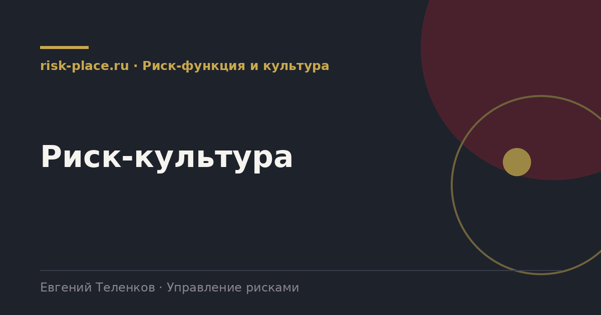

risk-
risk-Опрос сотрудников
- Короткий, 12-15 утверждений по четырем элементам, анонимно. Ключевые вопросы про то, что произойдет, если сообщить о проблеме
Главная · Библиотека · Риск-функция и культура · Риск-культура
Библиотека · Риск-функция и культура
Самая обсуждаемая и самая туманная часть управления рисками. Разбираем ее через измеримые признаки.

Риск-культура это совокупность установок и привычек, определяющих, как люди в компании ведут себя в отношении рисков без указаний сверху. Ее видно не в документах, а в решениях, которые принимаются, когда никто не смотрит.
Практический признак зрелой культуры один, плохие новости движутся вверх быстро. В компании со слабой культурой руководитель узнает о проблеме, когда ее уже нельзя решить дешево, потому что сообщать было невыгодно.
Каждый элемент проверяется фактами, а не мнением.
| Элемент | Признак наличия | Признак отсутствия |
|---|---|---|
| Пример руководства | Первое лицо само задает вопросы о рисках при обсуждении решений | Риски упоминаются только на профильном комитете |
| Открытость | Сотрудники сообщают о проблемах и ошибках без опасений | Проблемы всплывают на этапе, когда их уже нельзя скрыть |
| Подотчетность | Решения о принятии риска фиксируются письменно с фамилией | Ответственность за неудачное решение размывается |
| Компетентность | Руководители понимают методологию и пользуются ею в работе | Оценки заполняет служба рисков за подразделения |
Три источника, применяются вместе.
Из практики, три вещи работают, остальное нет. Первое, реакция руководства на первое сообщение о проблеме. Если человека, принесшего плохую новость, поблагодарили и помогли, об этом узнает вся компания за неделю. Если наказали, узнают тоже, и второго сообщения не будет.
Второе, разбор происшествий без поиска виновного. Формат разбора, где ищут причину в процессе, а не человека, за год меняет число сообщений в разы. Третье, видимая связь между сообщенным риском и принятым решением. Люди перестают сообщать, когда сообщения уходят в пустоту.
Обучение, плакаты и корпоративные ценности на стене без этих трех вещей не работают вовсе. С ними работают хорошо, потому что подкрепляют то, что люди уже видят.
Частые вопросы
Одна форма для любого вопроса
Расскажем о ближайших датах, предложим формат под ваш состав участников и назовем порядок бюджета.
Предпочитаете почту — напишите на info@risk-place.ru. Адрес: Москва, улица Скаковая, 32с2.